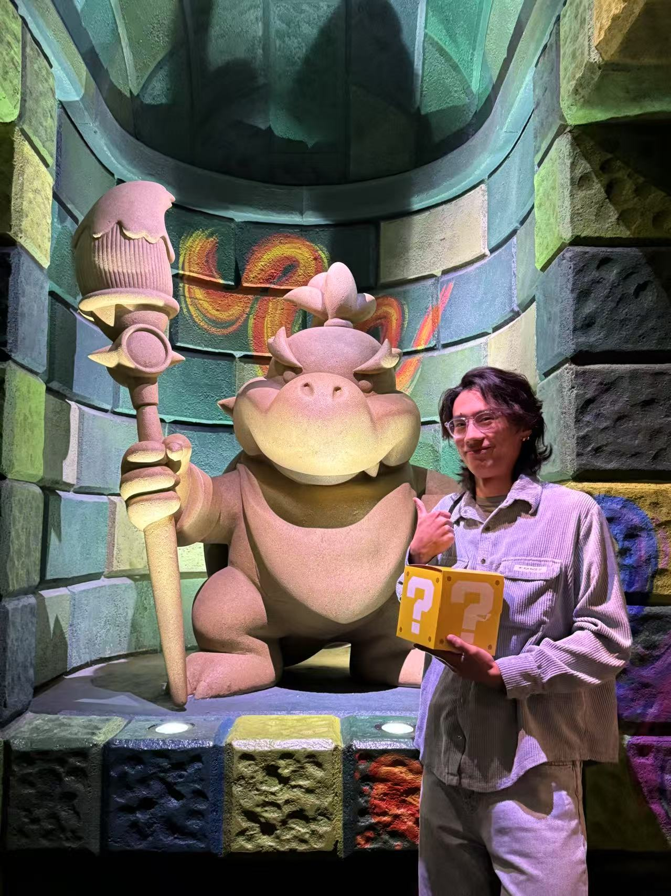

About Me

I'm Cooper, a game designer passionate about creating experiences that foster empathy, connection, and joy. At NExT Studio, I contributed to SYNCED: Off-Planet, designing levels and bosses.
I hold a BFA in Game Design from NYU Game Center and am currently pursuing an MS in Game Design at USC, focus on blending narrative and gameplay. My skills include level design, combat design, enemy AI, and rapid prototyping, with proficiency in Unity, Unreal Engine, C#, and Unreal Blueprints.
If you'd like to chat about game design or potential collaborations, feel free to reach out!